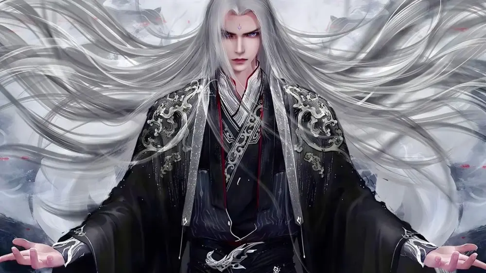
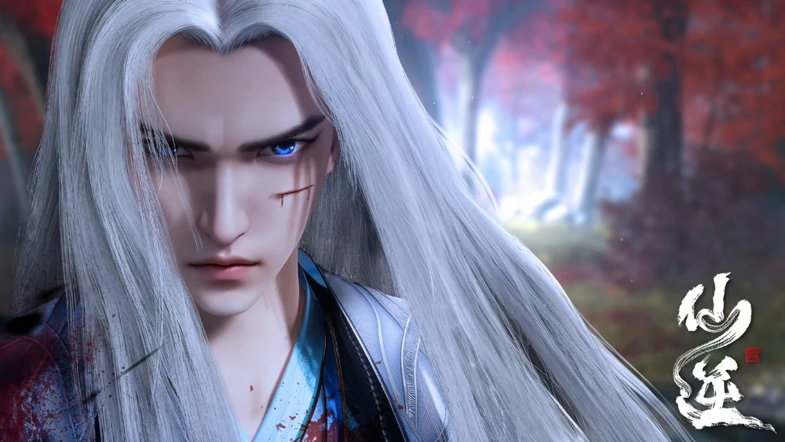
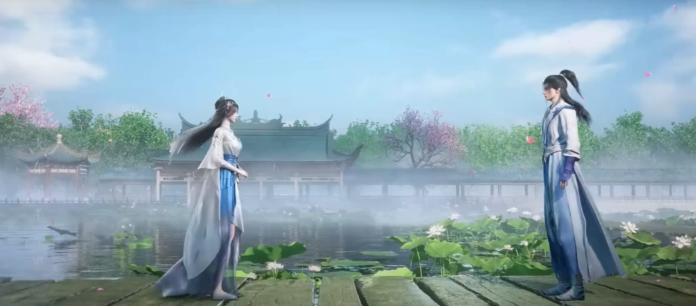
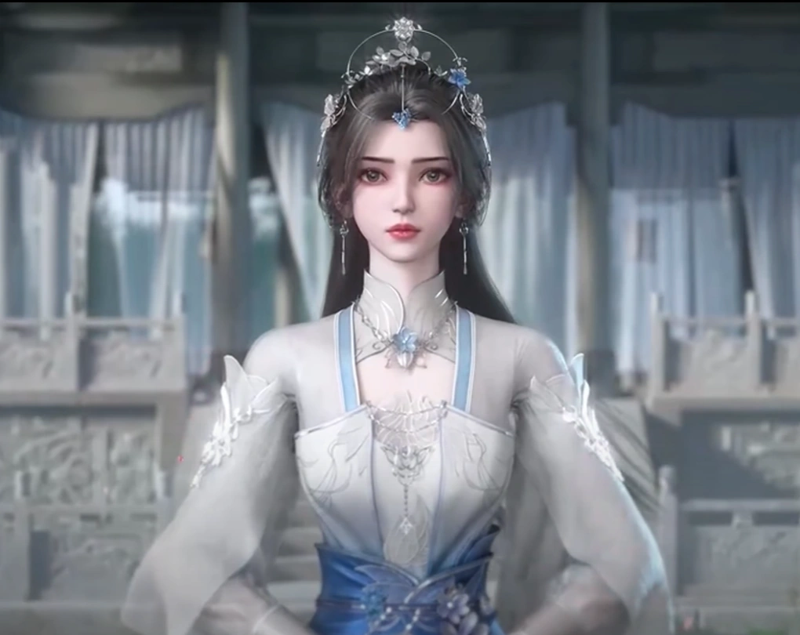
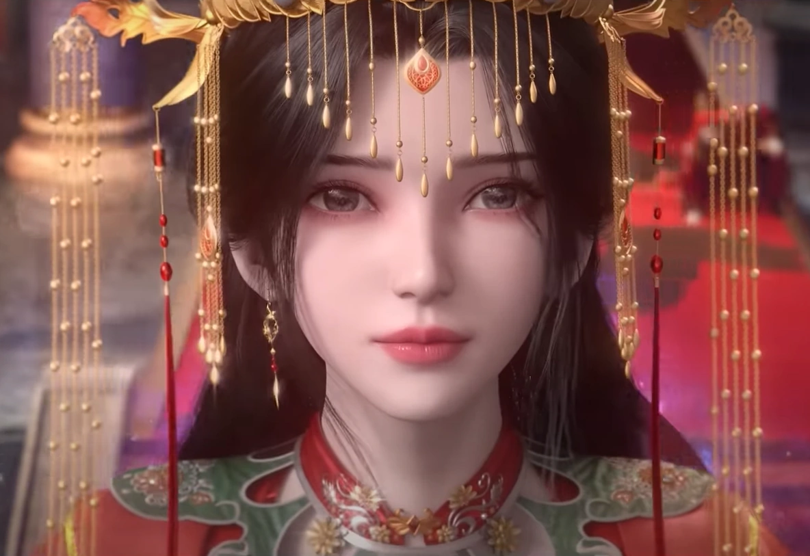
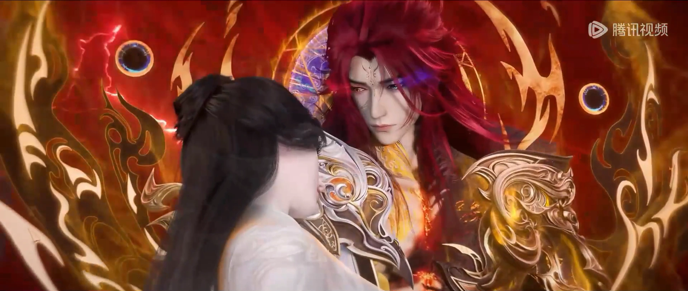
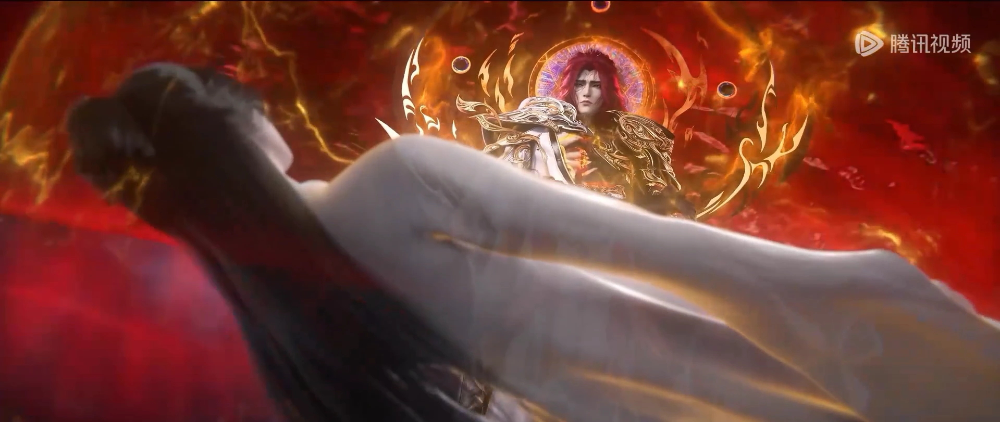

Book 1- The Mediocre Youth

He was allowed to participate in several tests to try and become a disciple in the Heng Yue Sect. The day of the test, he met Wang Zhou, and Wang Jie. Wang Lin was shocked and disappointed when he did not become a disciple of the Heng Yue Sect. Although he failed all of the 3 tests (Spiritual Power, Willpower, and the Door test), he displayed great determination, but because his talent was too low he failed (Willpower). Letting down his family, and wasting the chance his Fourth Uncle gave to him. After a dream of him becoming an immortal, he wakes up in the middle of the night and decide to travel to Heng Yue Sect to try again. Even if he fails again, he will find a way to enter an immortal sect. When he was able to see Heng Yue Sect, he decide to take a break but was attacked by a Tiger. As Wang Lin approached a dead end, he jumped off a cliff. When he woke up, he found one of his arms was broken and understand how he survived, because of hunger, he decide to eat a dead bird who was in the cave and from the dead bird found a bead, thinking it's a Niedan, (Inner Pellet). After finding the truth, he put it aside. The next morning, because of thirst, he lick the dew from the dead animal bone around the bead and discover it's use. Wang Lin later tries to descend the cliff using his cloth but end up falling down. Luckily, a few moment after his fall, he hear his father's voice, after being found, because of his state, they think he tried to suicide. People laments him for attempting suicide, but end up able to join into Heng Yue Sect with the intention that after 8 to 10 years, he didn't succeed in cultivating, to send him back.
Book 2 - The Bloody Image Of Cultivation

After 4 years of Closed-Door cultivation Wang Lin decides to go to Tian Shui City. On his way he gets lost because Situ Nan urges him to fly over the forest, then he meets a group of merchants transporting a treasure and the merchants give him a ride. En route, Wang Lin's group meet bandits, Wang Lin recognizes one of the bandits to be a former member of the Heng Yue Sect, Zhang Hu. Zhang Hu pretends to not know Wang Lin because his "master" is nearby so that Wang Lin won't die, yet His master and Wang Lin fight anyways. After Wang Lin kills Zhang Hu's Master The two go to Tian Shui City. Zhang Hu's master was a disciple of Old man Ji Mo, and Old man Ji Mo sent other disciples to take revenge on Wang Lin. Teng Li takes on Old man Ji Mo's request and chases Wang Lin out of the city and into a forest that distorts Divine sense. Eventually Wang Lin wins and he steals the Foundation of Teng Li, which also increases his natural talent. While stealing Teng Li's Foundation, his great-great grandfather Teng Huayuan, a Nascent Soul cultivator, puts a curse on Wang Lin which lets him teleport to Wang Lin within a certain range, and vows to make life a living hell for Wang Lin. After stealing Teng Li's Foundation, Wang Lin successfully reaches Foundation Establishment. Now he can cultivate with techniques from Situ Nan, and decides to cultivate the Underworld Ascension Method. He uses a Yin Energy Detection Technique to find a suitable place for cultivating the Yin energy necessary to advance his Foundation, and reaches a ruin full of dense Yin energy. While cultivating, Wang Lin encounters a Blue-skinned man who has nine talismans attached to his body. The man speaks in a language that Wang Lin can't understand, the two fight and eventually the blue skin man retreats after Wang Lin expresses to him the He does not want to needlessly fight. Wang Lin goes back to cultivating and within one night breaks through the first four levels of the Underworld Ascension Method, reaching the peak of early Foundation Establishment, and forming his first cold core. While cultivating the Blue-skinned man returns and conveys to Wang Lin that he wants Wang Lin to follow him, and Wang Lin complies. After the two reach the mouth of a dragon statue, Wang Lin met the Nascent Soul of the Corpse Yin Sect elder named Wu Yu. From Wu Yu, Wang Lin learns of the Blue-Skinned mans name, Adai, and Wu Yu explains their situation, then lets Wang Lin leave the forest and teleport straight to the Corpse Yin Sect. Once Wang Lin arrives at the corpse sect, he meets an Nascent Soul elder named Ye Zi. Ye Zi gives Wang Lin an immortals cave and lets him cultivate to prepare for a competition where cultivators from all the surrounding sects compete for tokens to be able to go the Foreign Battleground. After finishing his cultivation session, before Wang Lin is allowed to go to the competition, Ye Zi makes him slice of a sliver of his soul and gives it to another late stage Foundation Establishment cultivator who will join Wang Lin in representing the Corpse Yin Sect in the competition. After reaching the Jue Ming Valley, the location where the competition takes place, just when the Corpse Yin Sect members are about to destroy Wang Lin's sliver of soul, Wang Lin attacks the members of the Corpse Yin Sect and take back the piece of his soul, then flees. Meanwhile Teng Huayuan, meets an expert to divine the location of Wang Lin's family, He succeeds in doing so and kills off his entire family aside from his fourth uncle (needed by expert), Wang Hao, and Wang Zhuo because they are members of another sect. As for everyone else Teng Huayuan traps their souls in a banner and through the curse he established between himself and Wang Lin, he transmits the scene of him annihilating the Wang family into Wang Lin's mind. He then tells Wang Lin that he will be waiting outside of Jue Ming Valley when the formation trapping in cultivators inside stops, and that if he does not appear he will destroy all the souls of Wang Lin's family in his banner. Wang Lin overcome with grief breaks into the Ji Realm of Spiritual Energy, and wanders lost and confused killing everyone who provokes him in Jue Ming Valley. Then Situ Nan wakes up and tells Wang Lin that his family still has hope since their souls are not extinguished. Ji Realm can kill anyone on the same stage in an instant But he could only cultivate till Nascent Soul Stage because Ji Realm is domineering to enemies as well as oneself and obstructs oneself from further cultivating. Now, no longer confused Wang Lin starts collecting the tokens of everyone in Jue Ming Valley, and manages to get five out of seven. He destroys four and keeps one for himself. He then confronts Teng Huayuan using a magic weapon for illusion into believing that he attained the Nascent Soul middle stage and attacks him with his sword and cunningness. After his plan Teng Huayuan saves himself and threatens to destroy his parent's soul if he doesn't shows up. Enraged by his words Wang Lin shows himself and snatches the soul flag in which his parent's soul contained unbeknownst to him that it was a trap and after touching it Wang Lin's body starts to disappear (starting from hands). Wang Lin shocks everyone by acting swiftly and decisively by cutting his hand to prevent curse from spreading and to escape to foreign battlefield. His last hope is shattered when Teng Huayuan destroys his token in an instant and also traps Wang Lin to be eaten by his own family members soul. At the brink of death he understands the true meaning of cultivating immortality (i.e. to step upon the weak and become powerful with no fairness). At the last moments Situ Nan saves his and his parents soul in Heaven Defying Bead by sacrificing his remaining powers and the Heaven Defying Bead breaks the barrier of Foreign Battleground. The messenger of Zhao who was witnessing the battle between Wang Lin and Teng Huayuan enters the battleground in order to catch the bead but gives up when the bead enters space rift from in which a anything living becomes a soul and return is impossible. Wang Lin then becomes a soul devourer by feeding on many souls in the rift and separates his consciousness which in turn creates many rifts open. He then takes over Ma Liang's body who is about to die and in return kills both the cultivators who killed him. Wang Lin also knows that those 2 cultivators knows that Ma Liang is dead so he doesn't want to take any risk like he did back then by leaving traces. He then leaves the foreign battlefield while using his observation, calculations and knowledge to overcome the black coloured laws of death which restricted any soul from leaving battlefield.
Book 3 - Famous In The Sea Of Devils

Wang Lin (in body of Ma Liang) meets Li Muwan while escaping from the pursuit of Fire Beast when the Heaven Defying Bead ate the King of Fire Beasts. He saw Li Muwan being chased by a middle stage Core Formation cultivator and didn't show any intention of interfering as he was only at fake Core Formation Stage. Li Muwan and that cultivator both sensed his presence and she called for help from him. She told him that the reason for her being chased was just because she had Tianli dan (pill) for attaining Core Formation stage. He then saves her and escapes with her to Sea of Devils in exchange for the pill. The Core Formation cultivator is killed by Fire Beasts while they are obstructed by the fog in Sea of Devils which stops their pursuit against Wang Lin. Along the way he meets Fighting Evil Sect's disciples and is threated by them to hand over his treasures and Li Muwan. But he kills all of them in blink of an eye which shocks Li Muwan and she comes to think that he used Death Spell to kill them which is very difficult to master and whose success rate is very low. After entering Sea of Devils with Li Muwan, Wang Lin finds a cave to cultivate and takes Li Muwan's soul blood for safety. He comes to know from her that she had unfinished Tianli Dan and needed a high quality furnace to produce it. He then enters the fourteenth district of Sea of Devils and finds an injured dragon nearing its end. He returns with it to the cave and instructs Li Muwan to increase the strength of the formation outside the cave. He then enters indoor cultivation to form his three cold cores to form a real golden core and reach Core Formation Stage but eventually fails in doing so. Later he went to Nan Dou City to get a alchemy furnace which was essential so that Li Muwan could complete the pill . When buying the furnace he was noticed by people of Fighting Evil Sect. They chase after him with 10 Core Formation cultivators. After returning to the cave he managed to stop them for a while, meanwhile Li Muwan tried to complete Distant Heaven Pill but failed. Wang Lin took the incomplete pill and broke through to Core Formation. Because of Ji Realm he is invincible in the same cultivation level thus he kills everyone. While trying to kill the Fighting Evil Sect Sect Leader he is hit by Ten Thousand Devil Hundred Day Kill Order (when a person is hit by it that person has the word punish word on his forehead and the one who kill him will get the kill order activator's cultivation). Because of that he is attacked by many Core Formation cultivators. He gives ultimatum to all to leave and then kills them because he was afraid that this news could soon reach any cultivator at Nascent Soul Stage and endanger his plan of conquering Fighting Evil Sect. “ Don’t move. I’m taking you to kill people. ” — Wang Lin to Li Muwan in Sea of Devils He killed all the way to the Fighting Evil Sect and takes control of it by killing the Sect Leader. He the becomes the new Master of Fighting Evil Sect and returns Li Muwan back to her sect. Due to these actions and rumours about Wang Lin using Death Spell, he becomes famous and attracts notorious, evil Duanmu Ji who was at Soul Formation to capture him. He then chased Wang Lin all the way from the Sea of Devils to Xuan Wu. Wang Lin hides in Heaven Defying Bead for 3 years but eventually comes out as there was a time limit in the Heaven Defying Bead after which he captured him. Together with Wang Qingyue he brought Wang Lin to the Chaotic Broken Stars. Wang Lin's help was needed in the third level of Ancient Body by using Death Spell. Though being only on Core Formation Stage, he outwits Duanmu Ji, Gun Lan, Xu Liqing (together with a young man which he refined into puppet) and Hunchback Meng into believing that he was devoured by dragon and escapes from them. He then tries to return towards the entry of Chaotic Broken Stars to escape from there but is restricted by the voids. At this moment the jade slip given by Li Muwan automatically works and transforms into dragon, helps Wang Lin to reach the entry point. But for opening the teleportation he required high level spirit stones which he didn't have and then he is compelled to follow the same path of evil cultivators. In the first level he hides inside a black pagoda to save himself from hurricane of devils and creates his second devil other than 1st devil Xu Liguo which he made in Fire Demon Country. He then creates a hurricane with help of 2nd devil and reaches the entry point of 2nd level where he finds Hunchback Meng fighting with Hurricane Beast King who is at perfect circle Soul Transformation Stage. In urgency Hunchback Meng eats his own toad to reach perfect circle Soul Transformation Stage and kills the Beast King after getting injured. He then tries to enter second level but Wang Lin pulls him back to be eaten by beasts. Wang Lin then escapes to the second level where he stumbles upon Bridge of No Return. After reading about it he first experiments by sending devil and beast. The devil comes back but beast gets sucked into void as soon as it tries to return from bridge, as devil are special case. He then steps on bridge and discovers a dragon which was actually an illusion otherwise he would have flown back just by its breath if it would have been real. But as soon as he is about to reach the end he hears his parents call and Teng Huayuan's voice of elimination them. He controls his emotions and doesn't turn back. He then encounters mountain made up of ancient forbidden restrictions and is called Restriction Mountain. A restriction is a subset of magic circle and is more flexible, changes according to mind of caster who casted it. The only way to break it is to use your cultivation which needs to be strong to break it by force or to study and understand it. The higher the person goes the more proficient, complicated and powerful restriction on Restriction Mountain becomes. Wang Lin guesses that a person was ahead of him when he sees a place where ban was broken. He knows that if he tries to break it by force he would die so he tries to understand it. He then takes 10 days to find the eye of the formation and breaks it but discovers that the formation was modified by Demon Lord of Six Desires Xu Liqing by adding panic in it. As soon as his restriction is broken, Xu Liqing comes to know of this and guesses if out of Duanmu Ji, Hunchback Meng who could have broken it. Then he increases the difficulty of formations and starts to move with his refined puppet to the top of mountain. Wang Lin covers the Formation's eye of restriction set by Xu Liqing with his consciousness without knowing the time passed in this process. After several years inside Chaotic Broken Stars Wang Lin with his understanding improves the restrictions and moves forward and comes to realize that someone was breaking his formations with force from behind, guess it to be Duanmu Ji. When Duanmu Ji breaks them by force he comes to realize the extra restrictions added in them. He thinks it to be Xu Liqing who was familiar with restrictions and also plays cunning tricks on him. In order to break and reach the top, Duanmu Ji's magical weapons are destroyed. Wang Lin then makes arrangement for Xu Liqing and Duanmu Ji to meet at top and vent their anger on each other. Xu Liqing is attacked by Duanmu Ji suddenly when he is about to solve the last restriction. But as they both realize in fight that they were being played in Wang Lin's hands, all the restrictions on mountain are triggered by Wang Lin when he tempers the last restriction compelling them to escape in third level. But this also lowered their cultivation. Then Wang Lin understands the last restriction and gains title of Great Enlightened One from Ancient God Tu Si who appears and gives this title because he was the 4th person to break all the restrictions on mountain. He then enters in a pagoda where he collects a treasure bag locked by restrictions which he couldn't open because of his cultivation. From that tower, Wang Lin enters the third level of Annihilation realm where his nature of Soul Devourer activates. He then tries to kill Duanmu Ji by commanding the souls and deceives him into giving jade slip made of rules to leave body of Ancient God Tu Si while acting like a senior with different voice. Duamu Ji is eventually killed by Hunchback Meng who had become a puppet of Tuo Sen after reviving from sea of blood. He then tries to escape from the hands of Hunchback Meng and distracts him by attracting it towards Xu Liqing. Xu becomes shocked when he sees Wang Lin controlling the wandering souls and tries to defend himself but is eventually cornered by Hunchback Meng. Wang Lin in the aftermath escapes but notices that passage to exit was blocked by Tuo Sen who was created from the evil thoughts of Ancient God Tu Si. Tuo Sen wanted a swallowing soul like Wang Lin to break his shackles and acquire the inheritance of knowledge to complete his inheritance as he had already got Tu Si's inheritance of power. Ancient God Tu Si wanted to stop him because he knew that After acquiring it, Tuo Sen could become an 8 Star Ancient God and bring chaos to world. Wang Lin then tricks him and guess the right location to obtain inheritance of knowledge and acquires it eventually leaving Ancient Body of Tu Si. Before leaving he reshapes his body according to the ancient knowledge obtained leaving Tuo Sen trapped in the body for more than 1000 years. He then leaves Chaotic Broken Stars and fights his multiple clones formed by it through his newly formed body. He then meets Yun Fei (Qihuang Sect successor) and Qian Kun (Poison Palace Disciple) and inquires about the nearest city with no Soul Formation Stage cultivator. Both of them are shocked to see Wang Lin coming out of Chaotic Broken Stars as no one had previously done so. They think that Wang Lin was surely at Soul Formation Stage as Qian Kun saw a Nascent Soul cultivator being devoured by force in Broken Stars. Wang Lin then kills Qian Kun not only because he didn't want anyone to know that he had come out of Broken Stars but also because he belonged to the Sect of Hunchback Meng. By doing so he didn't want to leave witness like last time due to which his family was killed by Teng Huayuan. He then sets an ancient restriction with a 3 day limit on Yun Fei and enters her cave in Qilin City. Yun Fei then visits other cultivators in order to find way to unlock the ban on her. Wang Lin keeps his eye on her while opening seal on treasures acquired in Land of Ancient God in order to see if someone was proficient in opening ancient restrictions like him. A cultivator Qiu Siping who is late Core Formation agrees to unlock it for her in exchange for the name of the person who applied it on her. Wang Lin's devil kills her that instant and tries to escape but is caught by Qiu Siping. Wang Lin then intervenes and listens to his proposition for both of them to reach Nascent Soul Stage. He tells him that his master wanted to refine him in order to improve cultivation but he already found out and did something when his senior brother and master were in seclusion making them sleep. The secluded place was actually an ancient cave with restrictions and he wanted someone like Wang Lin i.e. proficient in ancient restrictions to open it in exchange for Yuan Ying (Nascent Soul). After opening the cave Wang Lin acquires his master's soul while Qiu Siping acquires his senior brother's. When consumed, Nascent Soul increases the chance of reaching Nascent Soul Stage. Wang Lin then tries to reach Nascent Soul but Ji Realm in his body restricts it and also breaks his core. Li Muwan (Wang Lin's wife) Li Muwan (Wang Lin's wife) After 200 hundred years, unbeknownst to Wang Lin, Li Muwan has given her heart long ago to him and is waiting to meet him again. In this time span she has left the Luo He Sect and become an elder in Cloud Sky Sect. Wang Lin's avatar enters the Cloud Sky Sect unbeknownst to him that his master's master was Li Muwan. Wang Lin wanted to reach Nascent Soul Stage with his avatar as the Ji Realm in his body was restricting for the same. When Wang Lin went to meet with his Master's teacher, he was shocked to see Li Muwan but remained calm. Li Muwan recalled the old memories from listening to Wang Lin's voice and also his temperament but denied them because the blood that Wang Lin left for her didn't respond to his avatar. A few months later, Wang Lin's real body appears in Cloud Sky Sect. While Li Muwan was looking for him, Wang Lin waved his hand and disappeared in front of her in order to not being confronted by her because of his feelings. Actually he didn't want Teng Huayuan to find Li Muwan and suffer just like his parents did as Wang Lin's family was murdered by him. He then reappeared when Li Muwan said, “Wan'er doesn’t ask for anything else, but to see you once. In these 200 years, Wan'er has depended on that bottle of spirit liquid to keep my vitality. If you aren’t willing to come out, then Wan'er will kill herself right now to release myself from this obsession.” When she asked him about the jade which she gave him 200 years, Wang Lin shattered her heart by telling that he threw that jade away (it was formed from Li Muwan's life force). If not for making it she would have reached late stage Core Formation and not get stuck at early Core Formation Stage. This also obstructed her in reaching Nascent Soul Stage. She then agreed to Sun Zhenwei's marriage proposal in front of him when she couldn't bear Wang Lin's rejection to be held after 6 months. Wang Lin, in order to shatter her heart more left after congratulating Li Muwan on her wedding with Sun Zhenwei whom she always denied as a dao companion because of Wang Lin. W2 Her words made Wang Lin realize his feelings for Li Muwan and he couldn't hold his heart and he went to see her using his avatar to tell her the truth and even showed her the jade which he didn't throw. Li Muwan was relieved and begin helping Wang Lin refining the pill that could help him achieve Yuan Ying Stage (Nascent Soul). At the day of the wedding for Li Muwan and Sun Zhenwei was also the day for Wang Lin's breakthrough. After his breakthrough, he rushes into the ceremony to kill Sun Zhenwei and to run away with Li Muwan. He kills Sun Zhenwei but didn't run because his Nascent Soul wasn't stable due to Ji Realm. He becomes the Sect Leader of Cloud Sky Sect after killing Chen Bailiang and hands over his position to Li Muwan. He then collects the blood essence of all elders and gives to Li Muwan to be returned after 500 years. She doesn't departs with Wang Lin and stays in the sect to make pills for him.
Book 4 - Clean Sweep

Wang Lin then returns to Country of Zhao and takes revenge by killing every member of Teng family. Eventually he kills Teng Huayuan and also doesn't spare Punnan Zi and Lin Yi who come to Teng Huayuan's aid. He then becomes a mortal in order to reach Soul Formation Stage while experiencing a mortal life without cultivating. He grows into an old man from a youth and experiences life and death of mortal to create Life Death domain. In order to reach Soul Formation he returns to Country of Zhao and uses the mountain near Xuan Dao Sect to breakthrough. God WangLImuwan Li Muwan is waiting for Wang Lin as 100 years have passed and tried to breakthrough 3 times from Core Formation Stage to Nascent Soul Stage (to increase lifespan) but fails which makes her body feeble and weak. In this span of 100 years Wang Lin had reached Soul Formation Stage and could help her in breakthrough. When Wang Lin arrives back in Chu Country and meets her, he comforts her that she wouldn't die and promises her to help her reach Nascent Soul Stage. The deathly aura around Li Muwan scared Wang Lin the most and he didn't want to separate with her as she only had 10 years to breakthrough to the Nascent Soul and had lived more years than a normal Core Formation cultivator's lifespan. He then uses his spiritual energy to keep her vitality and obtains a rank 6 pill recipe from Treasure Pavilion in auction to help Li Muwan break through to Nascent Soul. He then visited Sea of Devils with her and showed the cave in which they stayed together for 3 years to remind her of the time spent together. She recalled the fight in which Wang Lin said her to not move as he was going to take her to kill. This made the death aura around her fade a little bit although it didn't stop the life death cycle. Then Wang Lin and Li Muwan built a small house near Cloud Sky Sect and started living in there for 10 years. Within 10 years Li Muwan grew from a beautiful lady to an old one who just wanted to imprint the person next to her in her eyes before death. She didn't know if it was true love but this feeling reminded her of time when every time she would play zither, Wang Lin would come into her mind. The ingredient in the pills were mostly extinct so substitutes were found and pill was made after those years. Wang Lin hurriedly puts the pill inside Li Muwan's body just as it was completed when she couldn't take it anymore. The pill sent spiritual energy into Li Muwan but she dies because of weak body. She formed her Nascent Soul before dying and Wang Lin defies the heavens reincarnation cycle to put her soul into a baby that did not form a soul yet in mother's womb (that's what he thought though not true), just like what he did with Wang Zhao. While that was happening his main body fought with the "messenger of heaven" who appeared to make sure that Li Muwan's soul gets sent back to the reincarnation cycle. Li Muwan dies due to old age (500). He then raises that girl Zhou Ru in which Li Muwan's soul resided and waited for 19 years for Li Muwan's soul to heal itself from the harm caused. As Zhou Ru grows, she feels another soul (Li Muwan's) in her body which was devouring her original soul. She tells this to Wang Lin but he denies it in order to not be sad and relieve himself from suffering. Even he was astonished as he thought that Zhou Ru's soul wasn't formed in her mother's womb and that is why he transferred Li Muwan's soul into her body. He was like a father figure for Zhou Ru and husband of Li Muwan so he was finding every method possible to save both souls but he was unsuccessful. So when it came to choosing between one of them, his mind held Li Muwan as priority as she reminded him of the parting years and time spent with her. He was constantly reminded of the white hairs and the fading vitality of Li Muwan when she died and this pierced his heart even more from agony. Li Muwan wasn't willing to devour Zhou Ru's soul so she exposed her Nascent Soul to the Heavens which made the heaven's messenger to come. Wang Lin was ready for this and fought for the 2nd time with him and instantly pulled her soul once again inside Heaven Defying Bead. He then saves her soul to journey for a way to revive her. Wang Lin kept Li Muwan's Nascent soul inside Heaven Defying Bead for 700 years. He used Qi Xi spell on himself and sacrificed his vitality which is the key to lifespan to resurrect her and form flesh out of her Nascent Soul which failed and didn't pass the 4th day out of 7 days. Wang Lin’s face revealed bitterness. He silently pondered for a while before revealing a decisive expression. He slapped his bag of holding and the Heaven-Avoiding Coffin flew out. The crystal coffin gave off a dazzling glow and was extremely gorgeous. Wang Lin’s hand trembled as he took Li Muwan’s nascent soul out from the Heaven Defying Bead. Although he had made up his mind, now he silently pondered once more. To let go or not to let go... Looking at Li Muwan’s quickly-dissipating nascent soul, Wang Lin placed Li it inside the coffin. The moment her nascent soul landed in the coffin, she went from sitting down to lying down. Wang Lin stared intently. He forgot about everything else around him. Right now only Li Muwan existed. The moment Li Muwan lied down, a mysterious force filled the coffin. This power surrounded the entire coffin. When it swept by, Li Muwan’s nascent soul trembled and showed signs of collapse. However, just at this moment, the sliver of life force inside Li Muwan’s nascent soul began to move and the collapse slowed. Eventually, a five-colored light came from inside the coffin. At this moment, Wang Lin’s heart experienced a huge change. He took a deep breath. With his intelligence, he immediately understood. If Li Muwan didn’t have that trace of life force, she would have collapsed inside this Heaven-Avoiding Coffin!
Book 5 - Cultivation Planet Crystal

Book 6 - Arriving On Planet Tian Yun

Wang Lin and Situ Nan left Planet Suzaku and stopped by the Trading Planet to get some materials. During their journey to the Trading Planet, Situ Nan trained Wang Lin and imparted to him spells and techniques. The Trading planet mainly consist of oceans. Situ Nan told Wang Lin that the best way to obtain things are to steal and plunder. When they arrived at the Trading Planet, they split up and Situ Nan told Wang Lin to meet him again in three days. When Wang Lin arrived on land, he met Li Dannan. Li Dannan became his guide as Wang Lin searched for a Void Wood Stone and snow ink. After obtaining the wood void stone, Wang Lin met Bai Wei on his way to a shop that had the snow ink. Wang Lin wasn’t able to get the snow ink because the price was obnoxiously high, and as a result, he contact Situ Nan to steal it for him. In the three days of Wang Lin and Situ Nan’s separation, Situ Nan had made a mess of the planet and had stolen from almost every sect and family on the planet. On the third day when Situ Nan met up with Wang Lin, he was being chased by a huge crowd of people. Wang Lin and Situ Nan escaped the planet with the treasure and Wang Lin received the snow ink. Wang Lin and Situ Nan parted ways afterwards and the atmosphere was very melancholy. When Wang Lin arrived at the Tian Yun Planet, he appeared at the Purple Cloud Pavilion of the Heavenly Fate Sect. The Heavenly Fate Sect was divided into seven divisions: red, orange, yellow, green, blue, cyan, and purple. The Purple division was by far the weakest out of the seven divisions because it has so much in-fighting. When Wang Lin entered the Purple Cloud Pavilion, he had to go through three trials/tests. After the three tests, Wang Lin was made into the seventh disciple of the Purple Division. Wang Lin learned that there were actually seven true disciples of the Heavenly Fate Sect. One true disciple for each color division. All-Seer would also soon choose these seven true disciples. After being made the 7th disciple of the purple division, he headed back to the residence assigned to the seventh purple disciple. When he arrived, there was a woman who wouldn’t let him in. Not wanting to cause trouble, he decided to make a cave near by but was disturbed by two disciplinary elders claiming that he could not make a cave in this location. Wang Lin realized that trying to avoid trouble would get him no where in the Heavenly Fate Sect. As a result, he decided to display his absolute domineeringness. Wang Lin then went back to the destroyed Purple Cloud Pavilion and renamed it the Purple Forest Palace. Wang Lin almost killed Zhao Xingsha but All-Seer arrived to calm everything down. Later, when All-Seer’s birthday banquet was approaching, Wang Lin was schemed against and trapped by Zhao Xingsha, Sima Rufeng, second brother and Zhao Xinming (fourth sister). They trapped Wang Lin because they didn’t want him to have the chance to be choose by All-Seer to be a true disciple. While being trapped, Wang Ling was able to break through the middle stages of Soul Transformation. As a result, he broke trough the trapping formation and crash the birthday banquet on the last day. He battled second brother and Zhao Xingsha. Wang Lin devoured second brother's soul and heavily injured Zhao Xingsha but an elder stopped Wang Lin before he killed him. At the end of the birthday banquet, All-Seer also choose his true disciples. Wang Lin had a fishy feeling about being a true disciple and didn’t want to be one, but All-Seer insisted that he tried. As a result he battled Zhao Xinming and won. However, the sixth brother, Chen Tao, showed up, Wang Lin was once again challenged. Chen Tao was at the mid Ascendant level. Although Wang Lin didn’t win against Chen Tao, he was able to put up a good fight that shocked everyone, especially Chen Tao. Wang Lin later followed All-Seer to receive his Celestial Cultivation Technique and requested to temporarily leave the Heavenly Fate Sect to train. Wang Lin decided to go to the Earth Planet where he was greeted by junior sect master Xu Yunshan of the Xuan Yuan Sect. Wang Lin later traveled and stumbled upon a group searching for the Brilliant Golden Fruit. When Wang Lin confronted the group, the three elders from the Da Lou Sword Sect attacked Wang Lin. After they were killed, Wang Lin fed his Mosquito Beast the fruits. Wang Lin later used seals to turn the area that grew the Brilliant Golden Fruit into a Golden Spirit Root. He absorbed the Golden Spirit Root and also feed it to his Mosquito Beast and Thunder Toad which caused both of them to start evolving. Later, Wang Lin entered the East Demon Spirit Sea and met a tribe in the Mountain Valley. After displaying his power, Wang Lin was able to gain the recognition of the tribe and their chief, Ouyang Hua. After defending the tribe of outsiders, Wang Lin decided to teach this tribe the Soul Refining Sect's heritage in order to continue on their legacy. The tribe became the Soul Refining Tribe of the eastern sea. Wang Lin was regarded as the ancestor of the tribe and the tribe quickly expanded to over a million people. Through the Soul Refining Tribe, Wang Lin was able to restore the power of his One Billion Soul Flag. Wang Lin later took Thirteen and Huo Pao to Sky Demon Country to help them gain experience as well as use this experience as a trial for them. In the Sky Demon Country, he was able to befriend the general of the city, Mo Lihai. During Wang Lin's stay, he entered a cave where Yao Xixue tried to scheme against him but ultimately failed. As a result, she was captured by him and he made her tell him all she knew about the demonic realm. Mo Lihai later asked him to travel to the capital city and help him obtain a Vice Commander-in-Chief position. In the tournament, Wang Lin was able to beat his competitors and ring the Demonic Drum fifteen times, allowing him to place first and become an Ascendant. Bei Luo also helped Wang Lin battle the divine retribution during his breakthrough to Ascendant. Bei Luo later helped Wang Lin trap the scattered devil, Tie Lan. In return, Wang Lin helped Bei Luo weaken the fragmented ancient demon under the Fire Demon Country. Wang Lin's involvement helped give Bei Luo a single opportunity which resulted in him being able to devour the fragmented ancient demon under the Fire Demon Country. To thank him, Bei Luo allowed Wang Lin to enter the diluted version of Shi Realm which allowed him to see the trap inside the Celestial Slaughter Art before it was too late. He also located Zhou Yi's spirit's location inside the Tide Abyss
Book 7 - Fame Shakes The Allheaven Star System

When All-Seer, Ling Tianhou, Blood Ancestor and a few other old freaks came to the East Demon Spirit Sea, they saw that Wang Lin had the cave token and had greedy thoughts. As Wang Lin escaped into the abyss, he shouted to them that there was another a fifth cave that only Blood Ancestor knew about. This brought enough confusion to the group of old monsters to allow Wang Lin to escape. When Wang Lin escaped through an abyss and entered the Allheaven Star System, Greed had been sent to follow him. When Wang Lin arrived, He met three cultivators and ended up saving them. Because Wang Lin did not want to use his real name, he called himself Xu Mu. After learning the basic details of this new star system, Wang Lin decided to head to Planet Ran Yun. After arriving at Planet Ran Yun, Wang Lin was able to meet Sun Tai. Sun Tai wanted to spend the remainder of his years with some peace and quiet, and as a result, they become friends. Liu Mei later comes and attacks Wang Lin and she ends up losing to Wang Lin. It is revealed that she had a child with him and because of her hatred for him, she refined their son into a resentful spirit. Wang Lin raises his son, Wang Ping in a desolate village and raises him up to be a mortal. After his son’s death, Wang Lin was able to further evolve his domain. When Wang Lin left Planet Ran Yun, he was caught up by Greed and the Moongazer Serpent and escaped to the southern domain. In the Southern Domain, he entered the Thunder Celestial Realm and fought against the Blood Ancestor. He also helped many from the southern domain escape the Thunder Celestial Realm but he didn’t leave. As he traveled throughout the Thunder Celestial Realm, he met the Chosen Immortal Clan in the Thunder Celestial Realm and he learned the history of how the Celestials enslaved the Chosen Immortal Clan. As he was able to help the Chosen Immortal Clan out of the Thunder Celestial Realm, he killed some members of the Yao Family. The Yao family, being one of the 4 major powers in the southern domain, sent a kill order for Wang Lin. As a result, numerous families in the southern domain chased after Wang Lin. Many of those who chased after Wang Lin had their entire planet destroyed by him. As a result, many of the cultivators who chased after Wang Lin began to reconsider. When Wang Lin arrived at the Southern Domain’s Celestial Tournament, he was able to obtain first place and the qualification to enter the Thunder Celestial Temple. When Wang Lin arrived at the Thunder Celestial Temple, he had to go through three trials: heaven, earth, and human. Russell, a member of the Thunder Celestial Temple was the test proctor and though almost all the participants were trash. However, when he saw Wang Lin easily defeat his Golden Giant, he realized that Wang Lin was the one that killed his brother. There for he attacked Wang Lin. However, Wang Lin had shocked him when they fought and Wang Lin almost killed him if Master Flamespark did not interfere at the last moment. However, Qing Shui suddenly killed Russell with the Ji Realm for offending Wang Lin. On the second trial, Wang Lin and those who passed went to the Thunder Lake. Wang Lin had no problems passing the second trial and even absorbed the thunder snake spirit, astounding everyone. In the third trial, Wang Lin and the other cultivators were sent into a battle realm. The goal was to get the most kills. When they died in that realm, they would be sent back out without actually dying. Wang Lin killed many more cultivators, including Xu Ting and became the Thunder Celestial of the Thunder Celestial Temple. Later, Wang Lin made a request to Zhan Li Yunzi to resurrect Li Muwan’s soul. Zhan Li Yunzi wasn’t able to do It so he referred Wang Lin to his ancestor that could use the Qi Xi spell to revive Li Muwan. When Wang Lin met the ancestor, he wanted 50% of Wang Lin’s life force to perform the Qi Xi spell. However, they were not able to successfully recover Li Muwan. When Wang Lin arrived back in the Alliance Star System, he went straight back to visit Planet Suzaku. There, he found that a big head youth from the Allheaven Star System tried to attack and destroy Planet Suzaku. After beating the youth and making him into a servant, Wang Lin came back to the Wang family to find out that the Corpse Yin Sect was using his Wang Family to develop resentful spirits. In his anger, he killed all the Corpse Yin Sect members on Planet Suzaku and was able to take Lei Ji as a mount.
Book 8 - Alliance's Secret
After completing all karmic ties on Planet Suzaku, Wang Lin left to join the battle between the Allheaven Star System and Alliance Star System’s war. Wang Lin, Qing Shui, the Moongazer Serpent, and a few cultivators were later sucked into a void. In the void, Luo Chen suddenly appears from the Moongazer Serpent. Luo Chen, an Ancient God, was integrated in the Moongazer Serpent and then accepts the challenge from Wang Lin. Wang Lin gets recognition from Luo Chen and becomes an adult Ancient God. However, a mysterious youth and old man form the Moon Devourer Clan comes and interrupts. The Heaven Defying Bead suddenly activated and was able to beat back the two people from the Moon Devourer Clan. Wang Lin headed back to Planet Tian Yun in order to head back into the Sea of Devils. When he arrived everyone was surprised at his level of cultivation. As a result, Ling Tianhou challenged him to take three of his sword strikes. After taking all three and surprising everyone, Wang Lin returned to the Purple Pavilion where he met Bai Wei. After learning of Bai Wei’s secret, he tries to help Bai Wei but ends up still falling into All-Seer’s schemes. When All-Seer came to attack Wang Lin, Ling Tianhou helped defend Wang Lin and invited him to be an elder of the Da Lou Sword Sect. When Wang Lin was at the Da Lou Sword Sect, he was able to refine the Yang energy from Bai Wei with the assistance of the Heaven Defying Bead. During his absorption, a powerful aura came out and attacked Ling Tianhou and All-Seer. Wang Lin's aura was able to injure and absorb a good amount of All-Seer’s origin soul. After Wang Lin was done, he left Planet Da Lou and came across the three Chen brothers. They invited Wang Lin and his group to stay and cultivate. During Wang Lin’s stay, Situ Nan came to capture two girls from the Chen brothers. Situ Nan wanted to find Wang Lin to give these two girls to Wang Lin as his concubines. As Situ Nan was causing havoc, he suddenly realized that Wang Lin so happen to be here as well. They catch up and later decided to head towards the Sea of Devils once it opened. In the Sea of Devils, Wang Lin met up with the Soul Refining Tribe and gifted them various cultivation methods. Wang Lin also found out that the statue of him that the tribe had been worshiping had a soul devil in it. Wang Lin refined it as his second avatar. In the Demon Spirit Land, Wang Lin runs across Master Void. Because Wang Lin had awaken the Vermillion Bird Divine Mark, Master Void could not allow Wang Lin to grow any further because this would guarantee the rise of the Vermillion Bird Divine Sect. In the Celestial Emperors Tower, Master Void first tried to kill Wang Lin with his cultivation of peak Nirvana Shatterer. However, Wang Lin set up a killing formation and display his source origin in order to lure Master Void into the trap. When Master Void was trying to comprehend the Source Origin, Wang Lin attacked with his killing formation. Wang Lin was able to escape into a transfer array into the Celestial tower while heavily injuring Master Void. Wang Lin caused enough damage to bring his cultivation down to the mid Nirvana Shatterer realm. When Master Void and Wang Lin met again, they were in the Celestial Emperors Tower. Master Void wanted to attack Wang Lin but Zhou Yi, Wang Wei, Hu Juan, and Bei Lou coldly stared at him. However, in that instant, Wang Lin moved to attack, causing Zhou Yi, Wang Wei, Hu Juan, and Bei Lou to attack as well. Just at that moment, the All-Seer and Ling Tianhou arrived. Master Void tried to ask for him from All-Seer, but instead, All-Seer schemed against him, causing everyone's attack to fall upon him. This injured his body and soul even further and dropping his cultivation to almost the peak of early Nirvana Shatterer. When they were all in the 9th level of the Celestial Emperors Tower, Master Void sneak-attacked the heavily injured Wang Wei. Wang Lin used his furnace to switch places with Wang Wei and defended against Master Void's attack. When Ta Jia was able to possess Qing Lin's body, everyone was forced to escape the Celestial Emperors Tower. Master Void was later sealed by Ta Jia. When Wang Lin was fighting All-Seer, Wang Lin used Sundered Night and end up killing two of All-Seer's avatars along with Master Void. As Wang Lin was on his last breath, Lu Yun from the Vermillion Bird Divine Sect came to his rescue. Lu Yun was very impressed with Wang Lin and after beating back All-Seer and sealing Ta Jia, he took Wang Lin back to the Vermillion Bird Divine Sect. For the next three years, Lu Yun helped Wang Lin recover and become the Sixth Generation Vermillion Bird Divine Emperor. After Lu Yun died, Wang Lin went to save the Azure Dragon Divine Emperor and subsequently gave the rein back to the Azure Dragon Divine Emperor. Wang Lin also schemed against Tuo Sen by notifying everyone that there was an 8 star Ancient God on Planet Suzaku. Wang Lin was basically borrowing a knife to kill an enemy. Both the Corpse Yin Sect and the Allheaven Star System sent powerful members to Planet Suzaku to kill Tuo Sen. However, they were not successful and Wang Lin was forced to escape into the Cloud Sea Star System.
Book 9 - Peak Of The Cloud Sea
When Wang Lin arrived in the north region of the Cloud Sea Star System. He saved some mortals and began living in their village as a doctor and a mortal. One day, the Origin Sect sent out people to recruit and scout out cultivator. An Origin Sect disciple named Zhao Yu came to the village Wang Lin was living in. The arrogant Zhao Yu made all the mortal villagers stand outside in the rain. When one of the villagers pleaded with Zhao Yu to let the children back inside because they could not stand the freezing rain, Zhao Yu was about to reprimand that cultivator when Wang Lin stepped in. With Wang Lin's powerful cultivation, Zhao Yu's eyes immediately became dull and Wang Lin had Zhao Yu lead him back to the Origin Sect. At the Origin Sect, Wang Lin took the name of Ceng Niu. No one in the sect could see through his cultivation and they all thought he was just a mere mortal. When Rudy and Song Wude came to the Origin Sect to take it over, Wang Lin kills them both and everyone witnesses it. Lu Yanfei and Xu Yun comes to Wang Lin's small house and confronts him. Being the wise and smart person, Lu Yanfei accurately guesses Wang Lin's situation and then gives him an identity as one of the Origin Sect's ancestors. Wang Lin then travels outside the Origin Sect to the Wild Continent. There he stumbles upon a secret for the third step that caused a huge calamity in the Cloud Sea Star System thousands of years ago. During his return, the sects who heard about this had already gathered toward the region. Wang Lin meets Noble Money and his group on the way back and they try to detain him for questioning, but he ends up killing Noble Money and his group. When he returned to the Origin Sect, Li Qian Mei and Lu Yuncong came to pay him a visit. Li Qian Mei wanted to ask him three questions and Lu Yuncong wanted to get revenge for his son. However, When Lu Yuncong arrived with Li Qian Mei, he quickly found out that he was no match for Wang Lin, especially in the dao. The three talked about the dao throughout the night and both Li Qian Mei and Lu Yuncong gained great benefits. Li Qian Mei invited Wang Lin to an auction held by the Treasured Jade Sect and asked if he wanted to travel together. When the two arrived at the Treasures Jade Sect region, Wang Lin was in search for Origin Crystals. After displaying his power, he was invited to a secret exchange with many Nirvana Shatterer old monsters. There, he displayed his wealth and caught the attention of a few greedy old monsters. Wu Qing followed Wang Lin as he left the city and attempted to kill Wang Lin, however, Wang Lin killed him using the War Spirit Print. Everyone was shocked and believed that Wang Lin was a mysterious cultivator from the rank 9 God Sect. Wang Lin was then invited by Master Ashen Pine to the Seven-Colored Realm in order to help Master Ashen Pine find something. Master Ashen Pine took Wang Lin and a group of cultivators into the Seven-Colored Realm but in reality, everyone was scheming against everyone else, especially Wang Lin because he seemed to be the weakest. In the Seven-Colored Realm, Wang Lin was able to trick Master Cloud Soul into a different spatial crack because he wanted to ensure that Master Cloud Soul would team up with Master Ashen Pine and scheme against him. As time went on, many cultivators of the group died and only Master Ashen Pine, Wang Lin and an old woman in green was left. Wang Lin was able to steal some treasures from Master Ashen Pine and get away. Wang Lin was later able to kill Master Ashen Pine with the seven colored nail. Wang Lin later came across four cultivators from the outer realm, one of which he had met before when dealing with the Moongazer Serpent. He killed all of them and was able to steal their essence. Wang Lin also later faced Dao Master Blue Dream and was able to destroy his palm, but Wang Lin was greatly injured. Wang Lin went into closed door cultivation to comprehend his new spoils of war. When he came out of the Seven-Colored Realm, he headed to the Wind Celestial Realm. There, he was able to acquire a large herd of mosquito beast and evolve his king mosquito beast further. When he returned to the Cloud Sea Star System, he headed back to represent the Origin Sect in the ranking competition. He defeated everyone and killed those who disrespected Lu Yanfei. There, he also met Li Qian Mei and Mu Bingmei. After winning the rank 6 and 7 tournament, Wang Lin was about to represent the Everlasting Sect in the rank 8 tournament but the rank 9 God Sect canceled it. It turns out that Daoist Water wanted to kill Wang Lin because he sensed an aura of his master, Lord of the Sealed Realm. During the initial battle of Daoist Water and Wang Lin, Daoist Water thought he would be killing an ant, but Wang Lin proved very hard to kill and pushed him to the edge. As Daoist Water was able to make the final killing strike, the spirit of Lord of the Sealed Realm appeared and severely inured Daoist Water, making him retreat. However, since Wang Lin used up all his energy and a forbidden spell, Wang Lin ended up petrified and turned into stone. When Li Qian Mei showed up, she heard a voice telling her it is still possible to save Wang Lin by smearing her blood on his statue for 10 years. So for 10 years, that's what she did. The Ghost Sect was very unhappy she went missing for 10 years from the battlefield and ended up sending her deep into a spatial realm with powerful beasts. When Wang Lin woke up, he was furious and charged straight into the spatial crack where she was sent. After retreating her, they both escaped into the Outer Realm. In the Outer Realm, he ran into Tuo Sen, however, this time, he wasn’t as helpless against Tuo Sen as he was back them. Due to Tuo Sen being injured, he was able to further injure Tuo Sen with the Ji Realm. Wang Lin returned Li Qian Mei back to her father, Dao Master Blue Dream so that he could heal her. However, as a result of healing her, she lost most of her memories of Wang Lin. Dao Master Blue Dream then taught Wang Lin some spells that would help him due to returning his daughter back safely. After left, Wang Lin headed to the Scatter Thunder Clan in order to steal their lightening source. He was able to kill the Sect Leader and obtain many thunder sources, greatly improving his thunder essence.
Book 10 - Rampage Through The Inner Realm
Book 11 - Mysteries Of The Ancient Era
Book 12 - Tenth Sun Of The Immortal Astral Continent
Book 13 - Light Of The Coming End